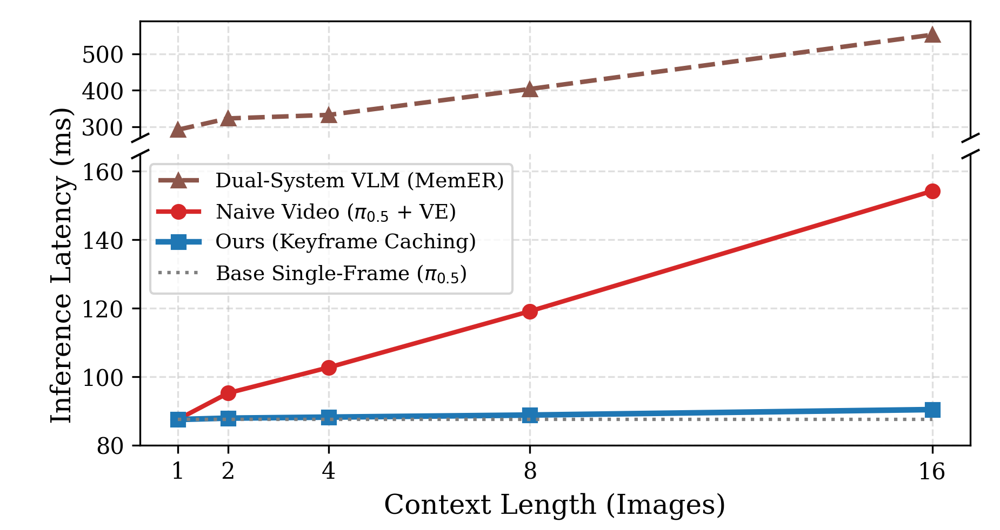
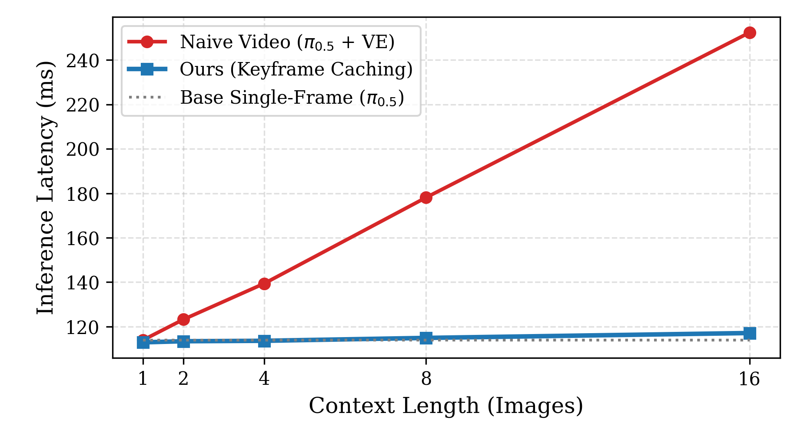

Abstract
Memory and control, one backbone
Overview
State-of-the-art VLA policies act almost entirely on the current camera frame — they have no architectural memory. That's fine for short, fully-observable tasks, but it breaks down the moment a task requires knowing what already happened: state-of-the-art policies still fail at tasks as simple as picking something up and putting it back where it was. Two moments in a task can look nearly identical while demanding completely different actions depending on history — a failure mode the paper calls perceptual aliasing. Prior fixes either bolt on a second, slower VLM to plan over history (a hierarchical, decoupled pipeline) or feed the policy a fixed window of recent frames (which invites spurious correlations and doesn't scale). UniMem instead adds a lightweight event classifier directly on top of a VLA's own latent features. When it detects a task-critical milestone, it (1) appends a short phrase to a running textual memory and (2) caches the current multi-view image as a keyframe — both fed back into the same backbone that produces actions. Because keyframe hidden states are cached rather than recomputed, this rich multimodal memory costs almost nothing at inference time.
Event-Driven Memory
A lightweight classifier head reads the VLA's own latent state to detect task milestones and autoregressively updates a language prompt and keyframe cache — no separate memory module or transformer.
Multi-Modal Conditioning
Textual memory anchors task progress; keyframe memory supplies fine-grained spatial detail. Ablations show both are necessary and complementary — neither alone is enough.
Real-Time Keyframe Caching
Keyframe hidden states are cached prior to temporal attention, giving ~90ms single-frame-like latency and a 6× speedup over hierarchical memory baselines.
Method
How UniMem works
History: none
Event classification & textual memory
UniMem is built on top of π0.5, an open-source VLA with a PaliGemma backbone and a Gemma action expert. A lightweight MLP head is attached to the backbone's final-layer latent representation and trained jointly with the policy to predict a task-relevant event (e.g. "grabbed box") or a null class at every step. Because this head shares gradients with the backbone, it doubles as auxiliary supervision — pushing the model's features toward whatever is relevant for memory and action. Detected events are appended in natural language to a running textual memory that conditions every subsequent step, giving the policy an explicit, cheap signal of its own progress.
Keyframe encoder & caching
Text alone can't disambiguate everything — e.g. spatial questions like which cup or bin. So every time the event classifier fires, UniMem also captures the current wrist and exterior images as a keyframe, maintaining a small rolling bank (capped at 3–4 past milestones) rather than a fixed-stride sequence of arbitrary frames. A modified SigLIP encoder interleaves causal temporal self-attention every 4 layers, and once a keyframe's hidden state has propagated through, it's cached in raw form — so adding a new frame only requires shifting positional embeddings, never recomputing spatial attention over the whole history. This keeps inference near single-frame speed even as visual memory accumulates.

Experiments
Nine memory-critical tasks
UniMem is evaluated on five simulation tasks (robosuite, 7-DoF Franka Panda) and four hardware tasks (UFACTORY xArm6), each designed to require sequential and/or spatial memory that a purely reactive policy cannot solve.

Real-World Results
Hardware tasks (xArm6)
UniMem is benchmarked against MemER — a hierarchical VLM + π0.5 system — as the primary hardware baseline, plus no-memory, text-only, and keyframe-only ablations. UniMem reaches 80.0% average success versus MemER's 43.5%, while conditioning the low-level policy on memory directly at every control step rather than through an intermediate subtask command.
| Task | MemER | N.M. | T.O. | K.O. | Ours |
|---|---|---|---|---|---|
| HammerMeasure | 87 | 13 | 53 | 53 | 87 |
| BeanScoop | 67 | 0 | 27 | 20 | 93 |
| TableClean | 13 | 0 | 0 | 47 | 80 |
| TapScoopPour | 7 | 7 | 7 | 27 | 60 |
| Hardware Average | 43.5 | 5.0 | 21.8 | 36.8 | 80.0 |
Success rates (%), N=15 rollouts per task/condition.
HammerMeasure
"Slowly measure the width of the hammer using the tape measure, controlling the retract to ensure the hook does not slip off the hammer."
BeanScoop
"Pick up the spoon, put three scoops of beans into the bowl, and then place the spoon back."
TableClean
"Pick and place the bottle off the 60cm × 80cm table, grab the sponge, wipe the bottle's original location, and then place the sponge back."
TapScoopPour
"Wait for a human to tap one of eight cups, grab the spoon, scoop the beans, pour the beans into the tapped cup, and then place the spoon back."

Simulation Results
Simulation tasks (robosuite)
In simulation, UniMem is compared against π0.5 with a video-encoder baseline (V.E.) that samples frames at fixed 6-second intervals using the same keyframe encoder architecture — isolating whether arbitrary frame sampling introduces spurious correlations relative to event-driven keyframes. UniMem reaches 93.4% average success versus 68.2% for the fixed-interval baseline.
| Task | π0.5+V.E. | N.M. | T.O. | K.O. | Ours |
|---|---|---|---|---|---|
| UpDown | 84 | 52 | 96 | 92 | 100 |
| UpDown3Times† | 16 | 22 | 93 | 23 | 96 |
| OccludedTap | 96 | 60 | 88 | 100 | 96 |
| UpDownSpatial | 49 | 6 | 30 | 52 | 79 |
| PlateRecall | 96 | 8 | 20 | 96 | 96 |
| Sim Average | 68.2 | 29.6 | 65.4 | 72.6 | 93.4 |
Success rates (%), N=25 rollouts per task/condition. (†) reports mean subtask success due to long-horizon complexity.
UpDown
"Pick up the box and then put it back down once."
UpDown3Times
"Pick up the box and then put it back down three times."
OccludedTap
"Pick up the box, place it in a bin, retract so you can't see inside the bin, and then decide which bin contains the box."
UpDownSpatial
"Pick up the box at various locations on a table, and then place it back in its original location."
PlateRecall
"Pick up the box from one of 4 plates, place it to the side, and then tap which plate originally had the box."
Efficiency
Real-time inference via keyframe caching
By caching pre-computed keyframe hidden states prior to temporal self-attention, UniMem avoids re-encoding the entire visual history at every control step. Benchmarked on an RTX 4090 against a no-caching ablation, single-frame π0.5, and MemER's dual-system architecture, maintaining a 16-keyframe memory context across four camera streams adds only ~25ms of latency beyond the single-frame, 2-camera base policy — keeping single-frame-like (~90ms) inference and a 6× speedup over hierarchical memory baselines.


Discussion
Conclusion & limitations
UniMem shows that long-horizon spatial and sequential memory can be unified within a single VLA backbone — matching or beating hierarchical, decoupled memory systems while training with a single-stage pipeline and running at near single-frame inference speed. Across nine tasks in simulation and hardware, this translates to higher success rates, simpler training, and low-latency real-world rollouts.
- Horizon length. UniMem has been validated over multi-minute rollouts, not yet over tasks spanning tens of minutes or hours; memory editing mechanisms like pruning and consolidation are a promising next step.
- Offline labeling. The keyframe/event extraction pipeline currently relies on automated offline labeling scripts rather than a policy that autonomously decides what's worth remembering.
- Single memory timescale. UniMem maintains one temporal context spanning several minutes; distinguishing short- from long-term memory — including memory that lives in the policy's weights, not just its input stream — remains open.
Citation
BibTeX
@misc{osterberg2026unimem,
title = {UniMem: Unifying Multimodal Memory and Control for VLAs},
author = {Osterberg, Lars and Wang, Maggie and Schwager, Mac},
year = {2026},
institution = {Stanford University},
note = {Preprint}
}